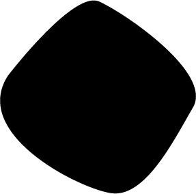

Chuck Close has worked for almost four decades creating portraits. Close will starts with a photograph and uses a grid to make these larger than life portraits. Close's work is highly subjective and the abstract and representational. Almost 100 self-portraits make up this exhibition, tracing the evolution of his process from 1967 to the present.

SELF-PORTRAIT
1997
Oil on canvas
102" x 84"
